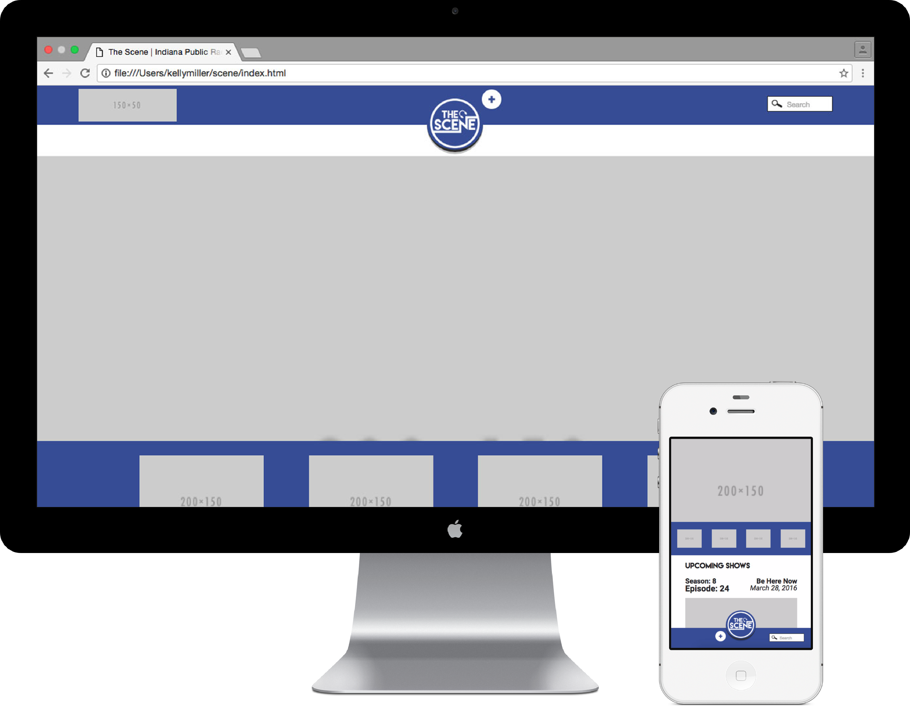
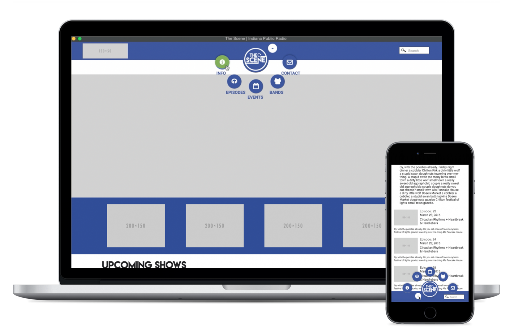
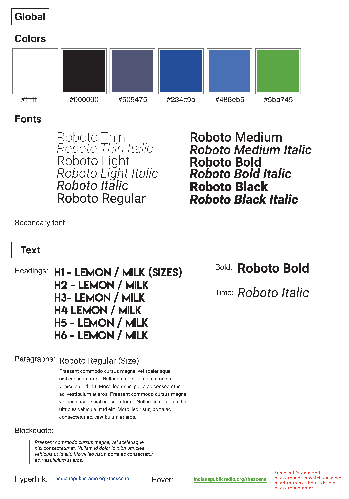
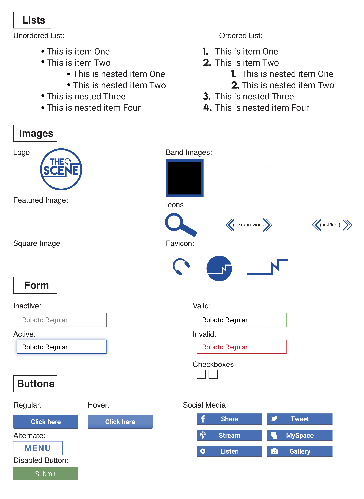

The Scene
Website redesign for an affiliate of Indiana Public Radio
I was co-project manager and lead designer on the redesign of a website for The Scene, a program of Indiana Public Radio that showcases music from local artists around the state. The project was a collaboration between myself and a coworker to rebrand and redesign the website.
 After examining the current website and creating initial mockups, we created a style guide before working on high fidelity mockups and eventually, the code. We wanted to use a radial menu that moves from the top of a desktop window to the bottom of a mobile window to adjust for easier reach on a mobile device. We wanted to utilize this type of menu to take advantage of the abilities of the touch screen as well as the younger target audience’s familiarity with technology.

The home page features a large image of the most recent event with upcoming concerts listed below. The color scheme, as requested by the client, has four different options that the program can choose to match with the theme and feel of the featured episode. A full listing of the bands that have been featured can be scrolled through alphabetically, searched by keywords, or sorted through by either genre or mood tags that the program will assign to different bands.
 Below are the mobile mockups for the home and band pages.